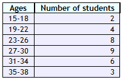

In chapter 2 we will look at graphing data by constructing a frequency table. We will also look at the idea of a box plot, but we will wait till chapter 3 to learn how to calculate the 5 number summary necessary to make a box plot.
In both chapters 2 and 3 our main goal is to talk about the center and spread of our data. With the graphs we want to visualize these ideas for our data set, while in chapter 3 we will look at calculating statistics that quantify the idea of center and spread.
Frequency tables are tools used in statistics to organize data into a table format that shows the frequency of various outcomes in a sample. Each entry in a frequency table contains the frequency or count of occurrences of values within a particular group or interval.
Today, we'll explore how to create and interpret frequency tables for numerical data, focusing on key concepts such as class width, class limits, and boundaries.
The frequency table for numerical data groups data into classes or intervals. Below is an example of such a table, showing the distribution of student ages:
Categorical frequency tables group data based on attribute or category rather than numerical intervals. Here's an example:
| Color | Frequency |
|---|---|
| Blue | 10 |
| Green | 7 |
| Red | 8 |
This type of table is best visualized using a bar plot, where each category is represented as a bar whose height reflects the frequency of responses.
Relative frequency is a measure of the number of times a particular value or class occurs relative to the total number of occurrences in a dataset. It helps in understanding the proportion or percentage of observations within a specific category compared to the entire sample.
The relative frequency of a category is calculated using the formula:
Relative Frequency = \( \frac{\text{Frequency of the category}}{\text{Total frequency of all categories}} \)
Where:
Consider a dataset with the following values for a variable representing the colors of cars in a parking lot: Red (15), Blue (25), Green (10), Yellow (5).
The total frequency is \( 15 + 25 + 10 + 5 = 55 \).
The relative frequency for Red cars is \( \frac{15}{55} \approx 0.273 \) or 27.3%.
Relative frequencies are best visualized using a pie chart, where each slice represents a category's proportion relative to the whole. This type of chart is particularly effective in showing the size of each category at a glance, making it easy to compare proportions.
Figure: Pie chart showing the distribution of favorite movies
Using pie charts, it's easier to communicate the relative importance of categories, making them ideal for presentations and reports where understanding the proportionate distribution of data is essential.
Visual representations of data help in understanding the distribution and trends:
Let's go look at our data explore for more examples: Datapage link.
Now that we have looked at the graphical representation of data, lets talk about calculating descriptive statistics for our data. Once again we are wanting to focus on the idea of the center and spread of our data. There are 4 key staticits that help determine these ideas:
The mean and median are measures of center, while percentiles and standard deviation help tell us about the spread of our data.
Before we go through these, it's worth pointing out that the mean and standard deviation are the most important to understand thoroughly.
It's worth understanding percentiles from a conceptual standpoint, but we will rarely compute them directly. We will compute mean and standard deviation.
The mean is a measure of where the data is centered. It is computed by simply averaging the numbers.
For example, our data might be: $$2,8,2,4,7.$$ The mean of the data is then: $$\frac{2+8+2+4+7}{5} = \frac{23}{5} = 4.6.$$
Like the mean, the median is a measure of where the data is centered.
Roughly speaking, it represents the middle value. They way it is computed depends on how many numbers are in your list.
If the number of terms in your data is odd, then the median is simply the middle entry.
For example, if the data is $$1,3,4,8,9,$$ then the median is $4$.
If the number of terms in your data is even, then the median is simply the average of the middle two entries.
For example, if the data is $$1,3,8,9,$$ then the median is $(3+8)/2 = 5.5$.
Suppose our data is $$4, 5, 9, 7, 6, 10, 2, 1, 5.$$ To find percentiles, it helps to sort the data: $$1,2,4,5,5,6,7,9,10.$$
There are differing conventions on how you interpolate when the number of terms doesn't work well with the percentile, but these differences diminish with sample size.
Suppose our sample is $$1,2,3,4.$$ Then, the mean is $2.5$ and the variance is $$s^2=\frac{(-3/2)^2 + (-1/2)^2 + (1/2)^2 + (3/2)^2}{3} = \frac{5}{3}.$$ The standard deviation is $$s = \sqrt{5/3} \approx 1.290994.$$
More often than not, we will be computing sample variance and the corresponding standard deviation.